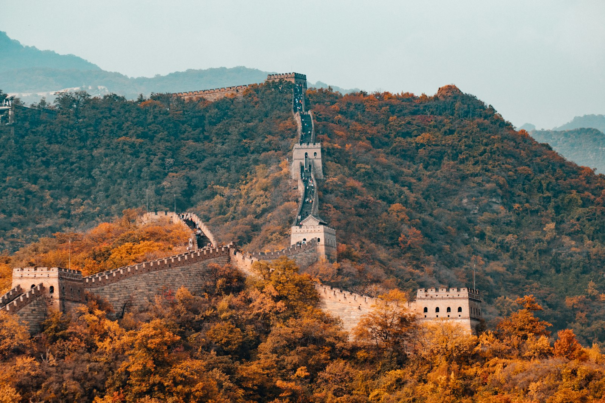

Beijing5 days · 4 nights
Beijing Discovery
Imperial landmarks, the Mutianyu Great Wall and authentic hutong culture.
Private guide · Cultural experiences
Muslim-friendly dining options available
View day-by-day itinerary
Arrival in Beijing
Meals: As arranged / at own expense Upon arrival at Beijing airport, meet your personal English-speaking tour guide and transfer by private vehicle to your hotel. After check-in, enjoy the rest of the day at leisure to relax and recover from your journey. Accommodation: Beijing Scitech Hotel — Standard Room Hotel address: 22 Jianguomenwai Street, Chaoyang District, Beijing, China
Telephone: 010-65123388
Tiananmen Square, Forbidden City & Summer Palace
Meals: Breakfast; lunch (CNY 100 per adult); dinner (CNY 100 per adult) Begin your sightseeing at Tiananmen Square, one of China’s most important landmarks. Continue to the Forbidden City, the celebrated imperial palace complex known for its grand halls, courtyards and traditional Chinese architecture. In the afternoon, visit the beautiful Summer Palace, famed for its landscaped gardens, lake views and historic pavilions. Accommodation: Beijing Scitech Hotel — Standard Room Note: Admission and timed-entry availability for major attractions should be reconfirmed before travel. The sightseeing order may be adjusted if necessary.
Mutianyu Great Wall Experience
Meals: Breakfast; lunch (CNY 100 per adult); dinner (CNY 100 per adult) Travel to the magnificent Mutianyu section of the Great Wall of China. Enjoy a cable car ride and admire the breathtaking mountain scenery and panoramic views from this world-famous historic landmark. After the visit, return to Beijing and relax at your hotel. Accommodation: Beijing Scitech Hotel — Standard Room
Temple of Heaven, Hutong Rickshaw Ride & Chinese Culture
Meals: Breakfast; lunch (CNY 100 per adult); dinner (CNY 100 per adult) Visit the Temple of Heaven, the historic complex where emperors once prayed for good harvests. Continue with a traditional rickshaw ride through Beijing’s hutongs to discover the character of the city’s old neighbourhoods. Enjoy a Tai Chi session and take part in a hands-on experience learning to prepare authentic Chinese dumplings with a local family. Accommodation: Beijing Scitech Hotel — Standard Room
Departure from Beijing
Meals: Breakfast After breakfast, check out of the hotel. Your Beijing tour comes to an end. The onward flight and airport transfer are to be arranged independently unless separately confirmed as part of the booking.